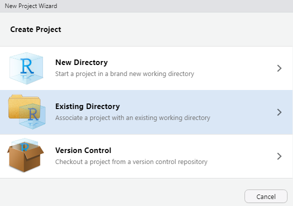
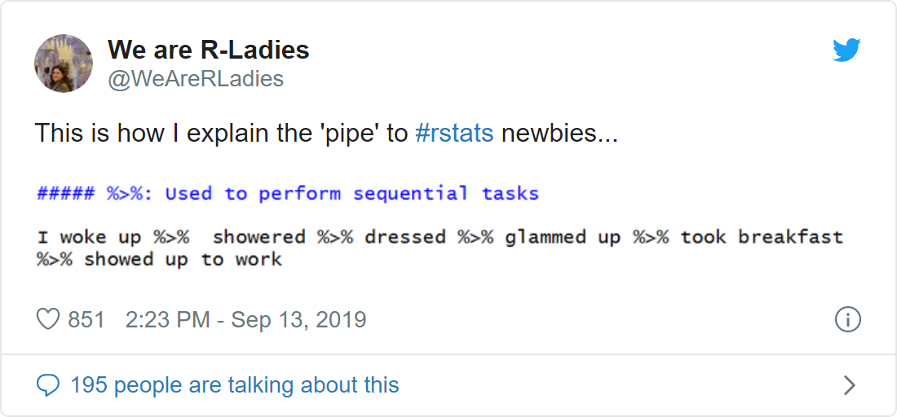

Due: Septermber 17, 2021 by the start of your lab section
Note: This lab is not graded (i.e. does not contribute to your course evaluation, so don’t fret)
R Markdown
file for Lab 0 Click link to download. Fill it in with your
answers to the following lab tasks. Once you’re finished, rename it as
Lab0_FirstinitialYourlastname.Rmd, and submit it using the
Sakai dropbox.
Lab_0_kenya.rds - data file available in the Resources folder of the Sakai course webpage
By the end of this lab, you will have demonstrated a basic familiarity with the R coding environment and R Markdown files. You will be able to:
In R, we organize our work by projects. It is best practice to keep no more than one project in any single folder on your computer. First, we should establish the file folders from which we’ll be working. This should always be your first step when beginning an analysis.
If you haven’t already, now would be a good time to:
Lab_0_kenya.rds (downloaded
from Sakai) into the folder called “data”Please make this a habit. We will expect you to do this for every lab, as it will keep your work organized and will keep you happy.
Now open RStudio and take a deep breath. Don’t panic. This will all be very familiar in a few short months.
Initiate a new project by going to File and clicking New Project.
 Then select Existing Directory and hit Browse. Navigate to the folder titled Lab 0. Open it, then hit Open.
If you’ve done this correctly, your new folder, “Lab 0” should appear in the bottom-right R Studio window pane, under the tab “Files” Likewise, the folder name, “Lab 0” should appear in the upper-right hand corner, indicating the current project’s name.
Now, you will open a special kind of document known as “R Markdown”. This is a text editor (like Word or Google Docs), but with a twist. You can implement the instructions you have written in the R programming language directly within the document. That is, you can “run code” directly within the document. This makes data analysis an interactive, iterative (and therefore fun?) process that usually proceeds as follows:
For each lab, we will provide you with a skeleton Markdown file. If you haven’t already, download that file (“lab0_705_fall2021.Rmd”, available at the top of this page) and save it to your folder named “Lab 0”.
Now open the file in RStudio. You can just double-click on it from the file folder. It will appear in the RStudio window pane, but might feel a little pinched. Luckily, RStudio allows Markdowns to pop-out.
Click the white square at the top of the Lab 0 document (circled in red in the photo below) to do just that:
Packages are collections of functions. As we’ll see shortly, we use functions as code to inspect, manipulate, and analyze our data. They are the verbs of the R language.
There are packages that come built-in with R. These have names like {base}, {utils}, and {stats}.
Since R is open-source, users are able to create their own packages so that other R users can use them. These packages are available in places like the Comprehensive R Archive Network (CRAN for short) and GitHub.
Lucky for us, packages are easily retrieved from the R Console. If you haven’t already, run the following code from the R Console, one line at a time, to download the packages that we’ll be needing for this semester. Unless you uninstall R, __*you should only ever have to do this once__*:
install.packages("tidyverse")
install.packages("skimr")
install.packages("tableone")
install.packages("epiR")
install.packages("devtools")
devtools::install_github("potato-nathan/epiAssist")
Unlike installing packages, every time we open a new R session, we
need to enable a package’s use in the R environment. To enable R to use
a specific package and its functions, we can load them using the
library() function.
In a fresh code chunk, call in the {tidyverse} and {skimr} packages using the following code:
Notice that when we install packages, we need to specify
their names using quotes because the package name is not yet known to
your own copy of RStudio. On the other hand, when we load them into the
R environment using library(), R automatically recognizes
them as the names of packages, so they don’t require
quotations.
You will use the dataset Lab_0_kenya.rds for this lab.
You’ve hopefully already saved it to the folder Lab 0 >
data. You will use the function readRDS() to
import the data file from your computer’s folder.
Since our project has been created within the “Lab 0” folder, it is thus our “Working Directory”, and RStudio will automatically start from that folder when we give it a function that asks it to look in our file directory.
Within our function, all we need to do is specify the file name, and that it’s in the folder called “data”.
Use the following code to load your data into R and give it the name
kenya.
kenya <- readRDS('data/Lab_0_kenya.rds')
When we load our data into R, it becomes what, in R, is called a data frame, which is the R term used for a dataset object. Without going into too much detail, it’s like having a spreadsheet of data with rows (i.e. different individual records) and columns (i.e. variables). For those of you familiar with mathematical terminology, it’s like a matrix.”
If functions are the verbs of the R language, objects are the nouns.
Just like nouns, there are many different types of objects,
which we will learn about throughout the semester. For now, you just
need to understand that an object is anything in your R environment that
is able to be explored, transformed, or analyzed by R functions. Objects
also have unique names. In the code above, kenya is a data
frame object.
To further illustrate, in the chunk of code below, fruit
becomes a character vector object of length 3, number
becomes a numeric vector object of length 1, and logical
becomes a logical vector object of length 1.
You can use class() to inspect an object’s type, and
object.size() to inspect an object’s size. We will learn
more about vectors
in a later assignment.
Most functions require specific types of objects.
<-)The <- is called the Assignment
Operator. We use it to assign names to objects in our
coding environment:
We can use our assignment operator for characters, numbers, logical operators, etc.:
fruit <- c("oranges", "papayas", "apricots")
number <- 99
logical <- FALSE
Now that the above values are stored in our environment, we can use them in other functions or operations as predefined variables:
We’ve done the same thing with our dataset, giving it the name
kenya. We might use the function head() to
view the first six rows in the dataset. This is a quick and easy way to
glance at our dataset and its accompanying variables:
head(kenya)
Familiarize yourself with the data by using the commands
ncol(), nrow(), class(),
names() and skim().
Similar to head(), we can feed our kenya
data frame to various functions that tell us other useful information
about it. As a tip, you can use $ in the format
[datasetName]$[variableName] to refer to a specific
variable/column within a dataset.
Use ncol() to print the number of columns in our data
frame
Use nrow() to print the number of rows
Use names() to view each variable’s name.
Use class() to view each variable’s “type”
Use skim() to print summary statistics for each variable
in the data frame
mageUsing a pipe (%>%) and the mutate()
function, create a new variable, mage for mother’s age (as
an integer) at the time of each child’s birth (note – some of these
mothers have had multiple children).
This is calculated from variables b3 (month code of
child’s birth) and v011 (month code of mother’s birth). The
difference between the values of these variables is in months, so
divide by 12 to get years. See the
data dictionary for a more detailed description of month codes and
how to use them. Use as.integer() around your calculation
to truncate the calculated values for mage to integers.
For this task, the mutate() function will work with the
following syntax.
%>%)One of the most useful tools in the tidyverse package is
a little thing called a pipe.
It’s represented with the symbol %>%, and allows us to
express a series of operations in a continuous string of code, rather
than using the assignment operator over and over.
As an example, let’s pretend we have a dataset that is a record of birds struck by aircraft in the United Sates over the past few decades. We want to know the frequency distribution of sky conditions for birds struck over 5,000 feet within the borders of North Carolina.
In base R, we might code it like this:
With a pipe, %>%, both our code and output becomes
more tidy. More importantly, it’s easy to read:
The pipe can be interpeted as signifying “and then”.
In the above example, the pipe tells the R console to take the dataset
birds, and then filter by
state and height, and then
group by sky, and then count the
observations in each group.
mageSuppose you want to break down mage into an ordinal
categorical variable with three categories. First, we might inspect the
frequency distribution (in one-way frequency table) for
mage. Do this using table().
table() works by identifying unique values within a
variable, and then counts their occurence.
It works on character variables, categorical (factor) variables, and even numbers.
As was mentioned earlier, we can tell R to look at specific variables
inside our dataframe with the $ sign. The syntax looks like
this:
dataframeName$variableName
If we want to include a count of NA values in our table, we can also
use the argument useNA = 'always' within
table().
Use table() to look at kenya$mage, then
consider the following questions:
mage? If so, how
many?mage?magecUsing mage, generate a new variable with three
categories: “<18”, “18-39”, and “≥ 40”, naming the new variable
magec
Set the values for magec to be 0,1,2, where 0
corresponds to the youngest age group (<18).
We recommend you do this in the following steps:
%>%) and then mutate() to
create a new variable, magec,mutate() command, use
case_when() to create a series of conditional statements
that assign numbers 0, 1, and 2 to each categoryfactor() to assign labels to
each level of your new variablekenya data frame.case_when()This function is used to create conditional rules when creating new
variables with mutate(). It allows you to create a series
of if-then (conditional) statements based on variables within your data.
At first, the syntax for case_when() might strike you as a
little overly complicated, especially for coding binary variables. But
as your variables become more complex, case_when() really
shines as a highly efficient way to create new variables on a series of
complex conditions.
An example of the syntax is as follows:
case_when(size == 'small' ~ 0,
size == 'medium' ~ 1,
size == 'large' ~ 2,
TRUE ~ NA)
Here, the tildes represents a formula. To the left
of the formula is a logical operation that can evaluate to either
TRUE or FALSE
To the right of the tilde, we put the value that we want to return
if the logical operation evaluates to
TRUE. If it is FALSE or
NULL, case_when() behaves by moving on and
testing the next conditional statement.
If it were run on a dataset containing a variable called
size, the literal translation of the above code would go
something like this:
For each row in the dataset,
* if `size` equals 'small', then return 0
* if `size` equals 'medium', then return 1
* if `size` equals 'large', then return 2
* if `size` is any other real value, then return `NA`When we do this within a mutate() function, the returned
values get assigned to the new variable for each row of the dataset as
they’re evaluated.
The right side of the formula needs to always produce a value of the
same variable type, but otherwise you have a
high degree of freedom in what can be returned when the conditional
statement is TRUE, including mathematical operations on
other variables.
See the documentation
for case_when() for more examples of this function’s
capabilities
Convert a variable to a factor with the following syntax:
mage and magecLook at a cross-tabulation (two-way table) of mage and
magec to ensure that magec was created
correctly. Be sure missing values were handled properly (all
observations that have a missing value for mage should be
assigned the R missing value “NA” for magec). Try the two
separate methods for cross-tabulation, as we will be using both for
separate purposes later in the semester:
Type “?table” in the console for help with how to create a 2x2 table. Note: the order of the variables in the command controls which one is in the rows and which is in the columns. Experiment to make your table readable.
# example code:
table(data$x, data$y, useNA = 'always')
We can also use tidyverse functions to accomplish a
two-way tabulation of our variables of interest. These functions will
become increasingly relevant and useful, and are a big reason why R is
such a popular platform for data science. We will use a pipe
(%>%), group_by(), another pipe, and
count() to get the same output given by
table().
A translation of the above code to written instructions would go as
follows, where and then represents the grammatical
equivalent of our pipe, %>%:
“Take dataset, data, and then
group_by variable x, and within those groups,
group_by variable y, and then
count the values in each of our groups.”
Here’s a link if you’re interested in learning more about pipes. Or just take a look at this tweet:

Using function saveRDS(), save the new dataset in the
same directory as our original data, using the following format:
“firstInitial_YourLastName_lab0.rds”
saveRDS() takes two primary arguments:
Don’t forget the following:
data/